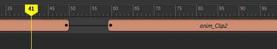
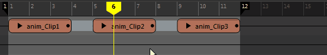

过渡将创建从一个片段到下一个片段的插值。它们使动画在片段之间平滑地流动，而不是在下一个片段的开头突然抖动。
若要创建多个片段之间的过渡，请执行以下操作：
- 集合轨迹上的片段。
- 沿轨迹放置这些片段，并按所需的间隔将其分开。
- 选择轨迹上的片段，单击鼠标右键，然后从时间编辑器片段(Clip)上下文菜单中选择“创建过渡”(Create Transition)。轨迹上片段之间的空白区域将由灰色条填满，以显示片段通过过渡接合起来。

若要删除过渡，请在由过渡包围的片段上单击鼠标右键，然后选择片段(Clip)上下文菜单中选择“重置过渡”(Reset Transition)。
注： 如果已启用“保持过渡”(Keep Transitions)模式，则将继续创建任何已重置片段之间的过渡。请参见下文中的“保持过渡”(Keep Transitions)。
可以使用重影来预览过渡。请参见通过时间编辑器重影预览动画。
保持过渡(Keep Transitions)
通过激活时间编辑器工具栏中的“保持过渡”(Keep Transitions) 模式，可以在不断开过渡的情况下重新排列接合在一起的片段。
“保持过渡”(Keep Transitions)模式可用于保持动画的总体计时，同时识别轨迹上的片段。

时间编辑器中的 crossfade
当一个片段随着下一个片段的动画出现而消失，使一个片段消散成下一个片段时，将会出现 crossfade。您可以创建 crossfade

crossfade 片段
将一个片段拖动到另一个片段上方，使其重叠。片段越是重叠，crossfade 就越长。
时间编辑器中的切割
切割是从一个操作过渡到另一个操作的最常见方法，其中单独的片段在时间上相互跟随，从而导致两个相邻片段瞬间发生变化。

- 若要将某片段一分为二，请执行以下操作：
- 选择该片段。
- 将时间编辑器的当前时间标记移动到要切割片段的位置。
- 从时间编辑器菜单栏中选择。（也可以选择时间编辑器工具栏中的
 或按 1 键。）
或按 1 键。）
- 将该片段移至要过渡到的片段旁边。这将在片段之间创建突变。若要平滑该跳转，请参见下文件中的“Crossfade”或“过渡”(Transition)。